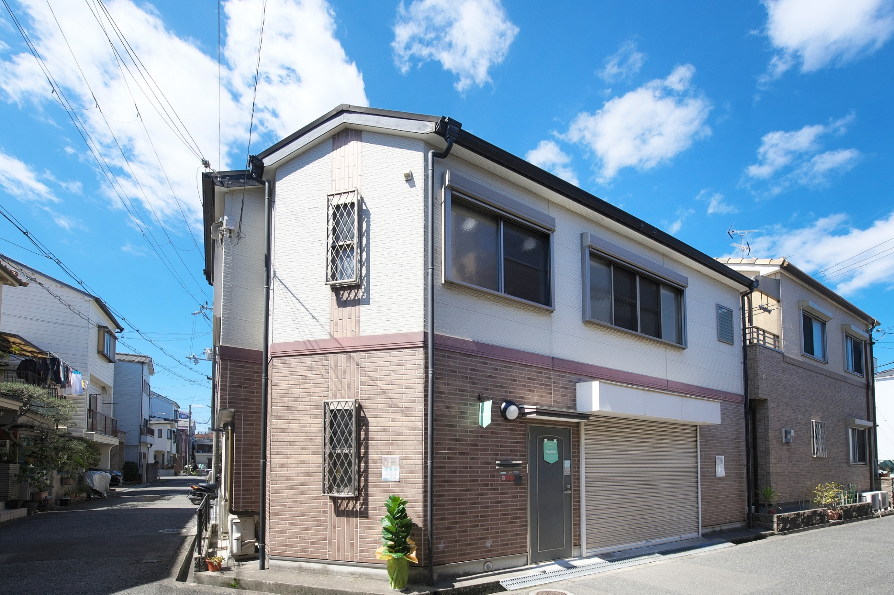
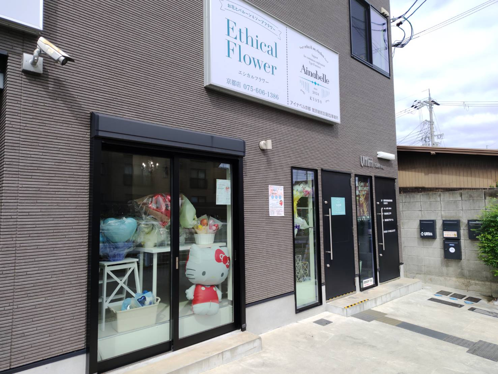
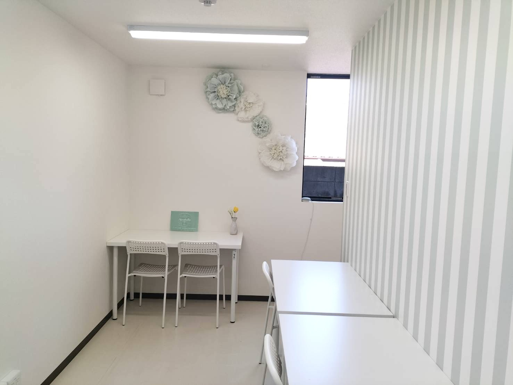
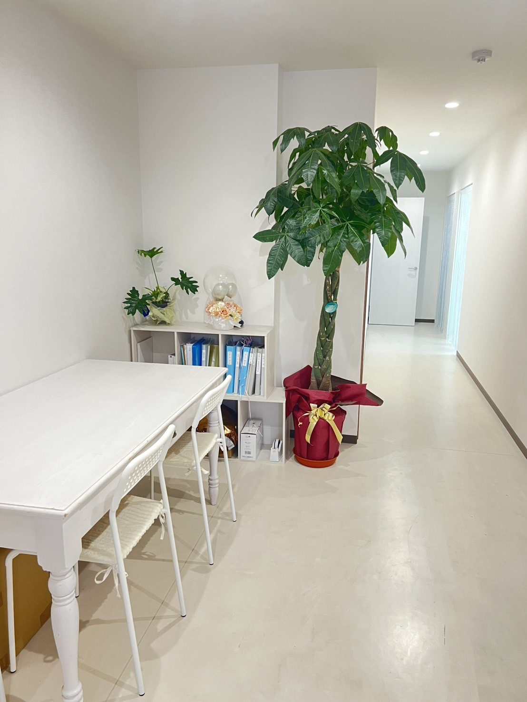
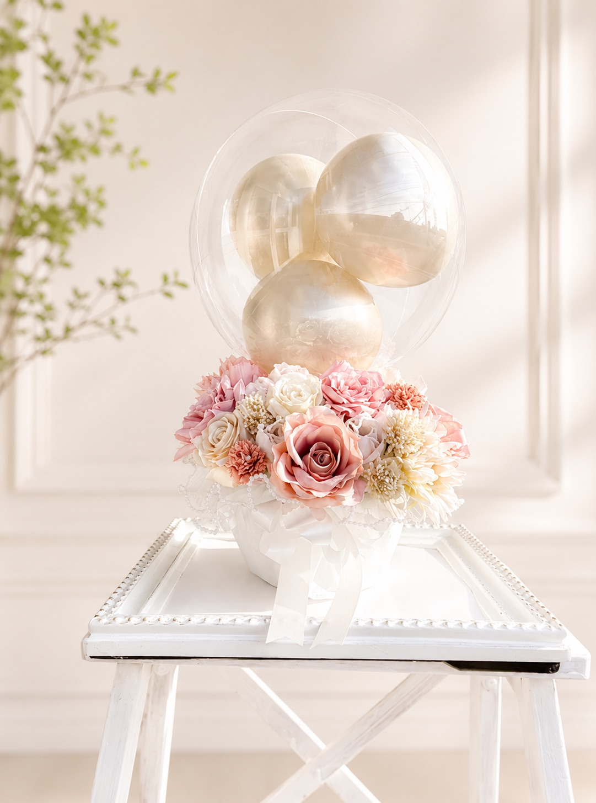
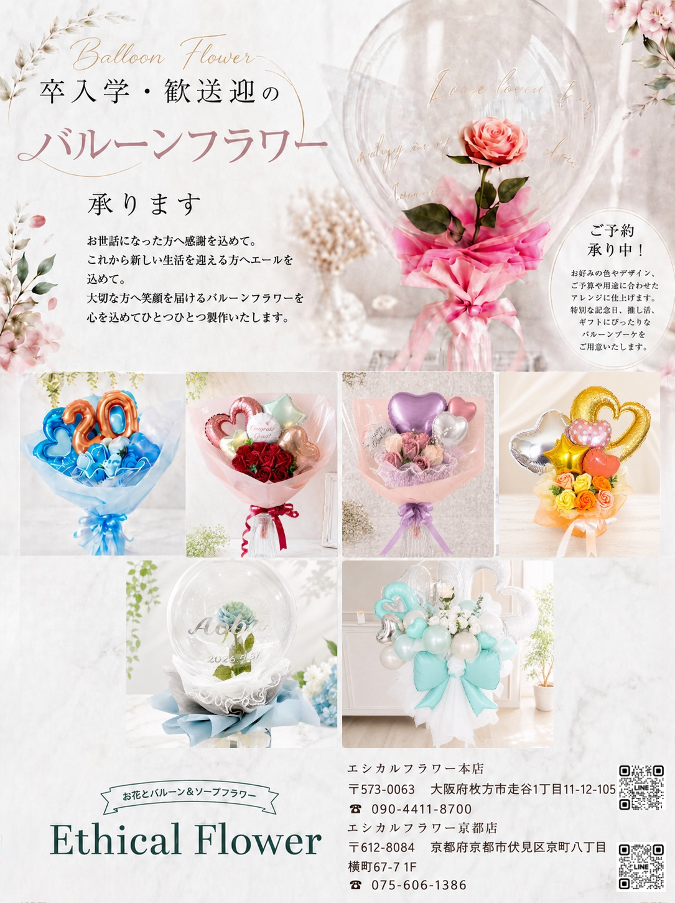
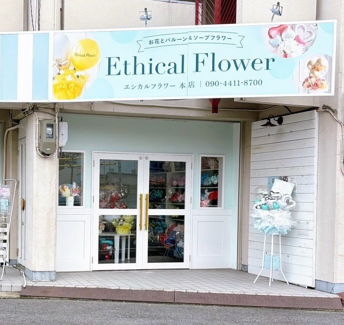
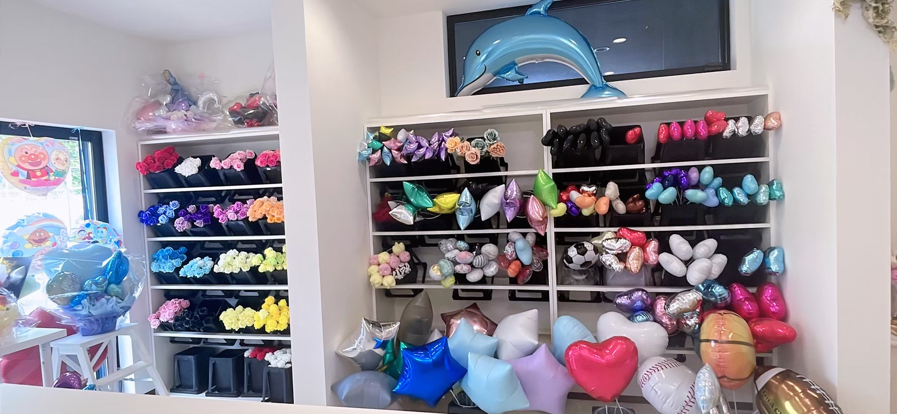

Support
for continuous employment
Type B services
就労継続支援B型事業所
リラックスして、
自分のリズムで働ける場所。
Work
お仕事
あなたのペースで、選べるピッタリのお仕事を見つけてください。
体調に合わせて、日数・時間・場所を個別にプランニングします。
- 🎈製造販売バルーンブーケ・ソープフラワー
- ✂️ハンドメイド布小物作成・雑貨製造・検品
- 📦テーブルワークパッケージング・器具クリーニング
- ☕接客カフェ・イベント出店・リユース販売
- 💻IT関係PC入力・SNS投稿・デザイン作成
- 🌱出向ワークファームワーク・本の仕分け など
こんなプランも可能です
- 週に2日だけ、接客に関わる仕事をしてみたい
- 午後から2時間だけ、雑貨を作ってみたい
- 体調が悪い日は、家でパソコン入力をしたい
Office
事業所
-

HIRAKATA
アイナベル 枚方
〒573-0094 大阪府枚方市南中振2-80-9
TEL 070-2227-0070 @ainabellehirakata Googleマップで開く
京阪「光善寺駅」徒歩5分
10:00–15:30（当社カレンダーによる） -



KYOTO
アイナベル 京都
〒612-8084 京都府京都市伏見区京町八丁目横町67-7 1F
TEL 080-5780-0947 @ainabellekyoto Googleマップで開く
京阪「丹波橋駅」徒歩4分／近鉄「丹波橋駅」徒歩7分
09:30–15:30（当社カレンダーによる）
About
アイナベルについて
アイナベルは、枚方市南中振と京都市伏見区にある就労継続支援B型事業所です。
バルーンブーケの製造販売やカフェ事業をはじめ、地域のイベントにも参加しています。
保育士・社会福祉士・介護福祉士・認定心理士・カウンセラーなどの専門スタッフが常駐し、カウンセリングサポートも無料で受けられます。
「毎日来たくなる」ようなリラックスできる空間づくりにこだわっています。
Feature
アイナベルの特徴
01
専門スタッフが
いつもそばに
保育士・社会福祉士・介護福祉士・認定心理士・カウンセラーが常駐。お仕事のことも、日々の不安も、気軽に相談できます。カウンセリングサポートは無料です。
02
生活リズムを
ととのえる
規則正しい生活リズムは、健康や幸福感に大きく影響します。無理のないワークスケジュールづくりから、人との交流まで、あなたらしい毎日を一緒に整えていきます。
03
栄養バランスを
考えたランチ
1食160円からのランチをご用意しています。みんなでテーブルを囲む時間も、アイナベルの大切なひとときです。※実施内容は事業所により異なる場合があります。
Flow
ご利用までの流れ
- STEP 01見学・ご相談
お電話・メール・LINEからお気軽に。ご本人・ご家族・支援者の方、どなたでもご相談いただけます。
- STEP 02体験利用
実際の作業を体験しながら、ご自身に合ったペースとお仕事を一緒に探します。
- STEP 03受給者証の申請
お住まいの市区町村窓口で申請します。書類の書き方など、スタッフがサポートします。
- STEP 04利用開始
ご希望の日数・時間から。自分ペースプランで無理なくスタートできます。
Q&A
よくあるご質問
- 週2日から利用可能です。ご自身の体調に合わせて、日数や時間を調整できます。
- 内容によっては在宅ワークも可能です。詳しくはご相談ください。
- もちろんです。まずは雰囲気を見ていただくだけでも歓迎です。
- はい、ご本人・ご家族・支援者の方、どなたでもお気軽にお越しください。
Partner
提携先
Ethical Flower
アイナベルで製作したバルーンブーケは、
バルーンとお花のお店「Ethical Flower」で
実際に商品として販売されています。

-

チラシを見る
-

Ethical Flower 本店〒573-0063 大阪府枚方市走谷1丁目11-12-105
@ethicalflower2026
TEL 090-4411-8700LINE -

Ethical Flower 京都店〒612-8084 京都府京都市伏見区京町八丁目横町67-7 1F
@ethicalflower.kyoto
TEL 075-606-1386LINE